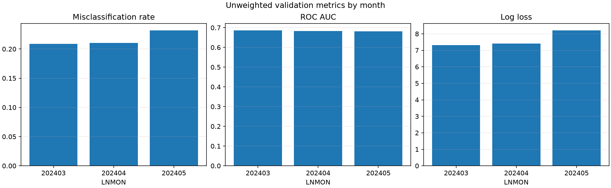
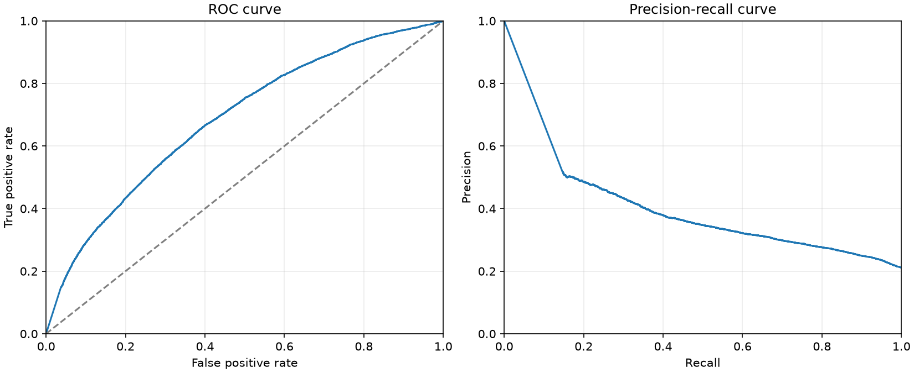
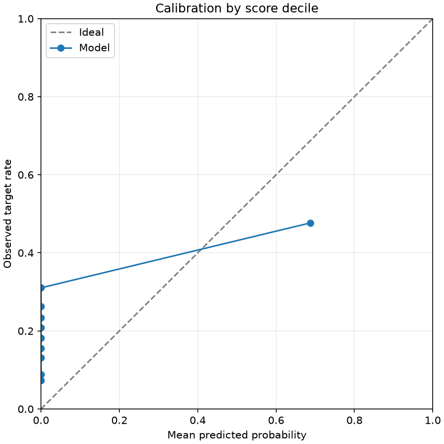
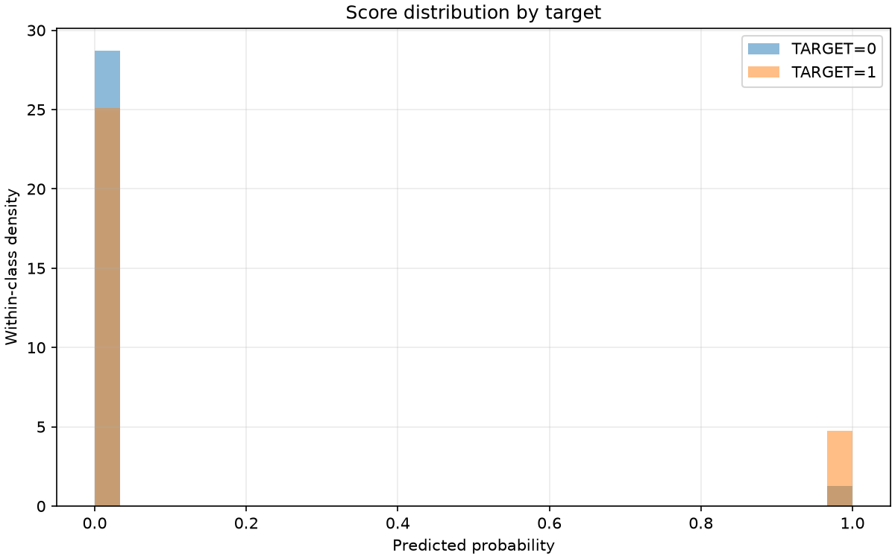
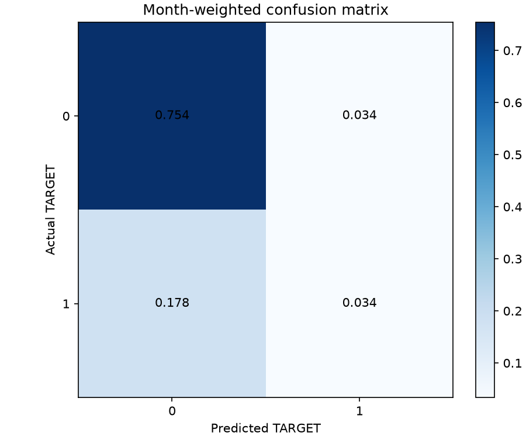

Training curve

Final validation 0/1 loss (misclassification rate): 0.211473
The training curve uses the model's original validation protocol. Scores describe undersampled data, not an independent test set.
| scope | month | rows | target_1_rows | misclassification_rate | always_zero_error | target_1_rate | roc_auc | average_precision | log_loss | brier_score |
|---|---|---|---|---|---|---|---|---|---|---|
| overall_unweighted | all | 41772 | 9173 | 0.21742 | 0.21960 | 0.21960 | 0.68379 | 0.37814 | 7.66080 | 0.21716 |
| overall_weighted | all | 41772 | 9173 | 0.21147 | 0.21173 | 0.21173 | 0.68488 | 0.36812 | 7.43130 | 0.21121 |
| common_v1_unweighted | 202404-202405 | 28679 | 6470 | 0.22145 | 0.22560 | 0.22560 | 0.68271 | 0.38680 | 7.81998 | 0.22118 |
| monthly_unweighted | 202403 | 13093 | 2703 | 0.20858 | 0.20645 | 0.20645 | 0.68644 | 0.35926 | 7.31214 | 0.20835 |
| monthly_unweighted | 202404 | 13966 | 2989 | 0.21044 | 0.21402 | 0.21402 | 0.68280 | 0.37710 | 7.41051 | 0.21010 |
| monthly_unweighted | 202405 | 14713 | 3481 | 0.23190 | 0.23659 | 0.23659 | 0.68224 | 0.39574 | 8.20866 | 0.23170 |
| evaluation | protocol | months | month_weighted | misclassification_rate |
|---|---|---|---|---|
| training_protocol | v2 | 202403,202404,202405 | True | 0.21147 |
| selected_protocol | v2 | 202403,202404,202405 | True | 0.21147 |
| actual | predicted | rows | weight_sum |
|---|---|---|---|
| 0 | 0 | 31217 | 0.75445 |
| 0 | 1 | 1382 | 0.03382 |
| 1 | 0 | 7700 | 0.17765 |
| 1 | 1 | 1473 | 0.03408 |
| decile | rows | weight_sum | mean_probability | observed_target_rate |
|---|---|---|---|---|
| 1 | 4178 | 0.10201 | 0.00000 | 0.07293 |
| 2 | 4177 | 0.09948 | 0.00000 | 0.08839 |
| 3 | 4177 | 0.10149 | 0.00000 | 0.13156 |
| 4 | 4177 | 0.09952 | 0.00000 | 0.15584 |
| 5 | 4177 | 0.09952 | 0.00000 | 0.18200 |
| 6 | 4178 | 0.10049 | 0.00000 | 0.20903 |
| 7 | 4177 | 0.09947 | 0.00000 | 0.23442 |
| 8 | 4177 | 0.09941 | 0.00000 | 0.26316 |
| 9 | 4177 | 0.09994 | 0.00000 | 0.31031 |
| 10 | 4177 | 0.09867 | 0.68739 | 0.47662 |
| threshold | selected_for_primary_score | weighted_true_positive | weighted_false_positive | weighted_true_negative | weighted_false_negative | misclassification_rate | precision | recall | specificity |
|---|---|---|---|---|---|---|---|---|---|
| 0.10000 | False | 0.03442 | 0.03402 | 0.75425 | 0.17732 | 0.21133 | 0.50291 | 0.16254 | 0.95685 |
| 0.20000 | False | 0.03432 | 0.03392 | 0.75435 | 0.17742 | 0.21134 | 0.50290 | 0.16208 | 0.95697 |
| 0.30000 | False | 0.03420 | 0.03387 | 0.75440 | 0.17753 | 0.21140 | 0.50246 | 0.16154 | 0.95703 |
| 0.40000 | False | 0.03412 | 0.03385 | 0.75442 | 0.17761 | 0.21146 | 0.50203 | 0.16116 | 0.95706 |
| 0.50000 | True | 0.03408 | 0.03382 | 0.75445 | 0.17765 | 0.21147 | 0.50191 | 0.16096 | 0.95709 |
| 0.60000 | False | 0.03401 | 0.03380 | 0.75447 | 0.17773 | 0.21153 | 0.50153 | 0.16061 | 0.95712 |
| 0.70000 | False | 0.03379 | 0.03374 | 0.75452 | 0.17794 | 0.21168 | 0.50039 | 0.15961 | 0.95719 |
| 0.80000 | False | 0.03371 | 0.03369 | 0.75458 | 0.17803 | 0.21172 | 0.50012 | 0.15919 | 0.95726 |
| 0.90000 | False | 0.03357 | 0.03350 | 0.75476 | 0.17816 | 0.21166 | 0.50051 | 0.15856 | 0.95750 |




